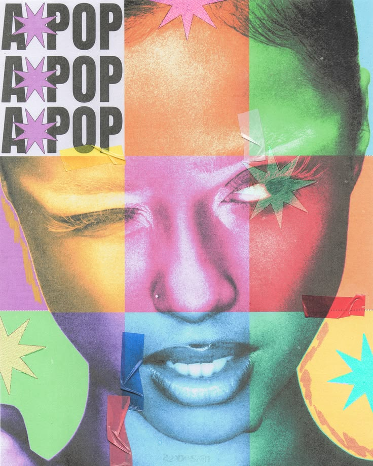

The Art of Visual Alignment
Visual alignment is an important part of digital design because it helps organize different elements into a clear and balanced composition. When images, text, shapes, and other design elements are properly aligned, a project becomes easier for the viewer to understand. Alignment can create structure while also making a design feel more polished and intentional. Designers can use alignment to guide the viewer's eyes toward the most important parts of a composition. Even small changes in spacing and positioning can completely change how a design feels. I like thinking of visual alignment as the foundation that holds a creative project together. Just like a chiropractor focuses on physical alignment, Ky.ropractor focuses on bringing creative elements into visual alignment.

Visual alignment can also be used to create balance, rhythm, and consistency across different types of media. In graphic design, alignment can connect text and images so that they feel like they belong together instead of looking randomly placed. In video editing, visual alignment can help create smooth transitions and consistent compositions from one shot to another. Color, typography, spacing, and imagery can all work together to establish a specific mood or visual identity. Music and entertainment are especially interesting because their visual identities often have to match the feeling of the music itself. When every element works together, the final product feels more cohesive and memorable. My goal with Ky.ropractor is to explore how creative elements can be adjusted and aligned to create stronger digital media.
Elements of Visual Alignment
- Typography
- Color
- Spacing
- Composition
- Imagery
Explore Adobe to learn more about professional creative software.
Visit Avid to explore professional media production tools.